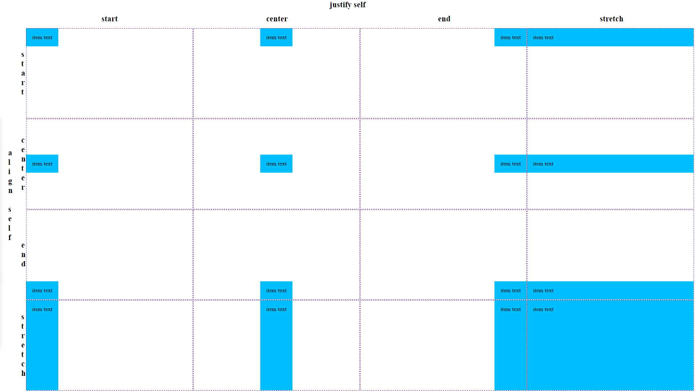

CSS Layout
2018
Martin Dybal
Co nás čeká
- Minulost
- Columns
- Flex
- Grid
Nové css vlastnosti
-
Column
- caniuse: 95.9%
-
Flexbox
- caniuse: 95.9%
-
Grid
- caniuse: 90.3%
Data pro českou republiku 25.11 2018
CSS Grid příručka
Základní teminologie
- Grid container
- Grid item
.grid-container {
display: grid;
}
<div class="grid-container">
<div class="grid-item">A</div>
<div class="grid-item">B</div>
<div class="grid-item">
<div class="sub-item">C</div>
</div>
<div class="grid-item">D</div>
<div class="grid-item">E</div>
<div class="grid-item">F</div>
</div>
Základní teminologie - line
01
02
03
04
05
06
07
08
09
10
11
12
Základní teminologie - cell
grid item
Základní teminologie - area
Pozicovaní prvků v buňce gridu

Internet explorer
- CSS Grid podporuje od verze 10
-
Ve specifikaci nebyl
- Auto placement
- Gap
- Areas
Zdroje
- Z IE máme 82% přístupů
- Should I try to use the IE implementation of CSS Grid Layout?
- CSS Grid in IE, css-tricks series
Grid autoprefixer
- Od verze 7.2. Doporučuji verzi >= 9.3.1
- Je nutno zapnout
- Pouze pro IE 10 a 11 a podpora není 100%
-
Přídá podporu
- grid-gap
- grid-template-areas
plugins: {
autoprefixer: {
grid: true,
browsers: "last 3 versions"
}
}
/* autoprefixer grid: on */
.grid-container {
display: grid;
}
Detekce podpory CCS Grid
-
@supports
@supports not (display: grid) or (display: -ms-grid) { /*Hack*/ } @supports (display: grid) or (display: -ms-grid) { ... } -
javascript
if(typeof CSS != "undefined") { if (CSS.supports && CSS.supports('display: grid')) { document.documentElement.className = document.documentElement.className.replace("no-cssgrid", "cssgrid"); } }.no-cssgrid .container { /*Hack*/ } .cssgrid .container { ... } - Modernizr
CSS Grid Layout Module Level 2
Working Draft
- Stylování grid cell
- non-rectangular grid area
- CSS Regions
- Subgrid